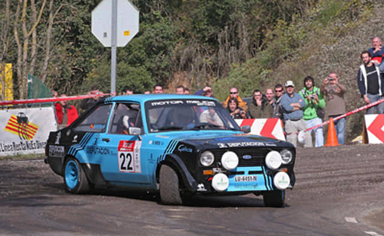
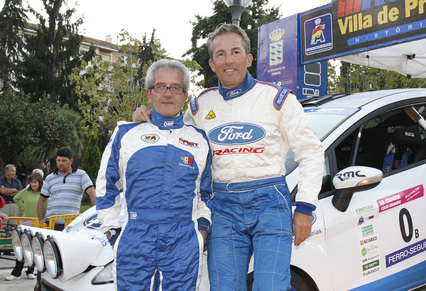
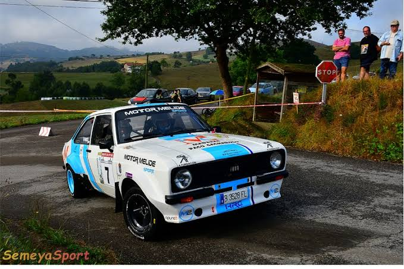

50 Edición Rally de Aviles Histórico

El Rallye de Avilés empezó en 1974 por la gran afición al motor que hay en Asturias, convirtiéndose pronto en una carrera muy famosa del norte de España. Todo esto es posible gracias a la Escudería Avilés, el club local que organiza la prueba desde el principio con mucho trabajo y dedicación. Este año el rally celebra su edición número 50, una fiesta muy especial que reúne a los mejores coches clásicos de carreras del país. Durante el evento, las carreteras de la zona vuelven a llenarse de ambiente para disfrutar del espectáculo y del sonido de estos vehículos históricos.
Resumen 50ª Edición
FALTA IGUAL PONER ALGO DERECHA
Equipo Ganador
| 46ª Edición | 47ª Edición | 48ª Edición | 49ª Edición |
 |
 |
 |
 |
| Xesús Ferreiro - Javier Anido | Daniel Alonso - Zacarías Llamas | Javiér - Ivan Bouza | Xesús Ferreiro - Javier Anido |
50ª Edición
